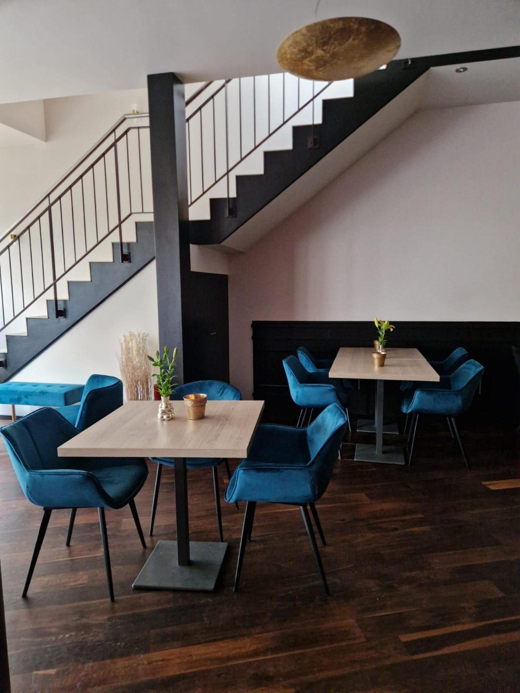

Mediterrane Küche im
Herzen von Harsewinkel
Direkt am Marktplatz gelegen, verbindet das Berries Inn stilvolles Ambiente mit einer Küche, die den Geschmack des Mittelmeers nach Harsewinkel bringt. Dunkles Holz, samtige Sitzmöbel und warmes Licht schaffen den Rahmen für einen Abend, der in Erinnerung bleibt.
Unsere Küche öffnet ab 17 Uhr — von frischen Vorspeisen über Klassiker vom Grill bis zu vegetarischen Gerichten ist für jeden Geschmack etwas dabei.
Zum Berries Inn gehört außerdem ein kleines 3-Sterne-Hotel mit 21 Zimmern — Informationen und Buchung folgen in Kürze an dieser Stelle.
Mediterrane Aromen
Vom Rote-Bete-Carpaccio bis zum Rinderfilet — frisch zubereitet mit Liebe zum Detail.
Handgemachte Cocktails
Klassiker und Signature Drinks, gemixt an unserer Bar mit Blick auf den Marktplatz.
Stilvoller Rückzugsort
Samtige Sitzlounges, warmes Licht und ruhige Ecken für Genießer.
Speisen & Cocktails
Ein Auszug aus unserer Küche und Bar — die vollständigen Karten findest du auf den folgenden Seiten.
Sichern Sie sich Ihren Tisch
Schreiben Sie uns Ihren Wunschtermin — wir bestätigen Ihre Reservierung schnellstmöglich per E-Mail.
Jetzt per E-Mail reservieren